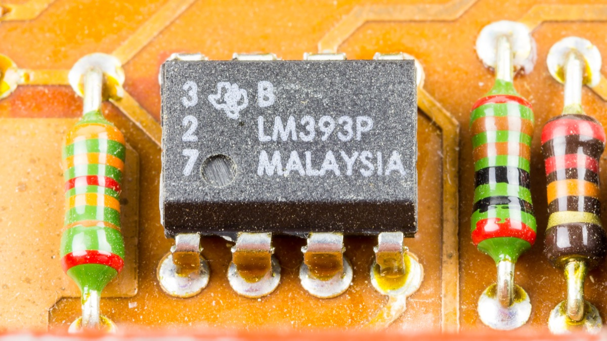

Make an LM393 comparator switch a light
Add an eight-pin comparator to the same RC circuit. Follow the input, reference and output with three meter readings.
Read the chip before plugging it in
Reuse P185. Add a Texas Instruments LM393P PDIP-8, one 27 kΩ, two 10 kΩ, one 2.2 kΩ, one 330 kΩ, one high-efficiency red LED and a 100 nF ceramic capacitor. Use the shared parts list with buying links. A comparator checks which of its two input voltages is higher. The LM393 output transistor can pull the output down. A pull-up resistor provides the high level when the transistor releases it.



Watch. Focus on the fixed reference and the input crossing it. The video uses a different amplifier circuit. Follow the LM393P pins and output wiring below. Afrotechmods · Comparator tutorial & clapper circuit.
Wire the pins, reference and output
Power off and fit the chip across the centre gap, with its notch towards the smaller strip numbers. Pin 1 goes in e15. Pin 8 goes in f15 directly opposite. The P185 parts remain on the a–e side. Use jumpers to connect the two halves only where listed.
| Pin or component | Exact connection |
|---|---|
| U1 pin 1, OUT | e15 is OUT. Fit 10 kΩ from +5 V to a15. Put the LED cathode in c15, anode in c12. Fit 2.2 kΩ from +5 V to a12. |
| U1 pin 2, SENSE | e16 joins the P185 divider and capacitor through strip 16. |
| U1 pin 3, REF | e17 is REF. Fit 27 kΩ from +5 V to a17 and 10 kΩ from b17 to GND. |
| U1 pin 4 and pin 8 | Jumper d18 to GND and h15 to +5 V. Fit ceramic C2 from g15 to g19, then jumper f19 to GND. |
| U1 unused section | Jumper f18 (pin 5) to GND and f17 (pin 6) to d17 (REF). Leave f16 (pin 7) open. |
| 330 kΩ feedback, add after tests 1–2 | Use spare strips 23 and 27. Resistor c23 to c27, jumper b23 to b15 (OUT) and jumper b27 to c17 (REF). |
Pin numbers run down the left side 1–4 and back up the right side 5–8 with the notch at the top. The 100 nF bypass belongs near the supply pins. The input ranges used here stay near the lower half of the supply. Consult the limits before trying a different input source. Texas Instruments · LM393P pinout and electrical limits.
Measure it in three steps
- RESET connected, feedback still out. With black on GND, touch the C1 positive lead in c16 for SENSE. It should read under 0.15 V. REF at the 27 kΩ end in strip 17 should be about 1.35 V. OUT at d15 should be within 0.2 V of the 5 V rail. The LED stays off.
- Open RESET. After a few seconds SENSE exceeds REF. The output transistor draws OUT down below about 0.4 V and the LED lights. Its current flows from +5 V through the 2.2 kΩ resistor, LED and comparator output transistor to GND. Refit RESET to turn it off.
- Add feedback. Power off, fit the 330 kΩ path in the table, then power on. Measure REF with RESET closed (LED off) and after SENSE has charged (LED on). At 5.0 V expect REF near 1.43 V off and 1.32 V on. Measure both with black on GND. Small differences from these predictions are normal.
Feeding OUT back to REF gives a higher turn-on and a lower turn-off threshold. The gap is called hysteresis. A small change near a threshold now has to cross the other threshold before the output reverses.
If OUT falls but the LED stays dark, check the LED polarity and the 2.2 kΩ path to +5 V. If SENSE moves but OUT never switches, check the pin 8 supply and pin 4 return, then compare the voltages at pins 2 and 3. If REF never shifts, measure power off from each end of 330 kΩ to its intended strip.
These are calculated checks for the proposed circuit. The photo identifies the actual chip package.
Next · Use the chip circuit as a door-left-open indicator